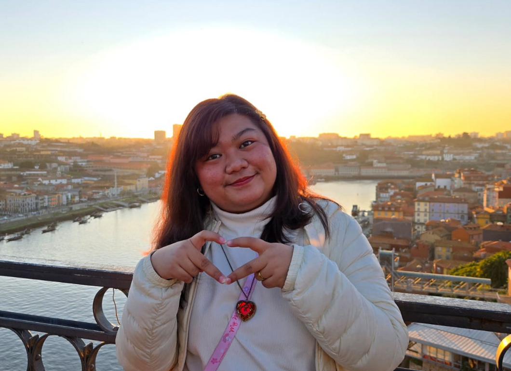

I am Janne Denesse Nedamo, a 2D Artist specializing in cute art styles and 2D animation! I have a bachelor's degree in Game Development from iACADEMY (Philippines) and a joint master's degree in Game Design from Universidade Lusófona (Portugal), LUCA School of Arts (Belgium), and Aalto University (Finland)! I've been a part of the games industry for 13 years, with 5 years of professional experience as Ranida Games's 2D Artist.
Outside games, I've been a freelancer since 2012 and have had 100+ clients over the years. I illustrate cute artwork, rig and animate VTuber models, and do just about anything related to cute stuff!! When I'm not dabbling on art and animation, I like to play friendslop games, bake and decorate cakes, do arts & crafts, and spend time with my bestie (my 20-inch squishmallow Miry).
To summarize:
✔️ 5 years of professional experience as a 2D Artist
✔️ 10+ years of freelance experience as an illustrator and animator
✔️ Bachelor's degree in Game Development from iACADEMY (PH)
✔️ Master's degree in Game Design from Universidade Lusófona (PT), LUCA School of Arts (BE), and Aalto University (FI)
✔️ 5+ released games, and 10+ game jams and prototypes on my itch.io
✔️ Several award-winning games as game writer & animator